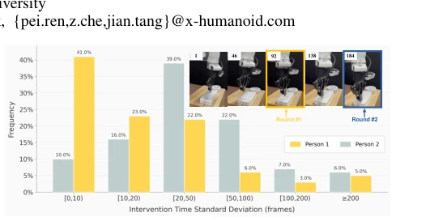
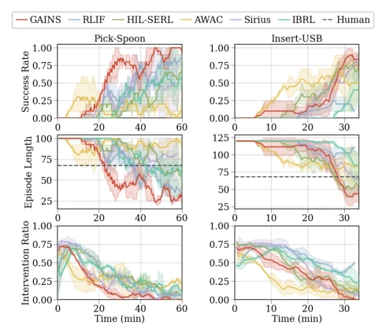
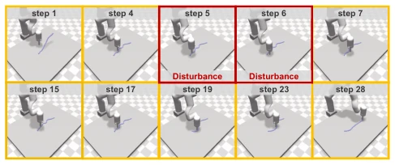
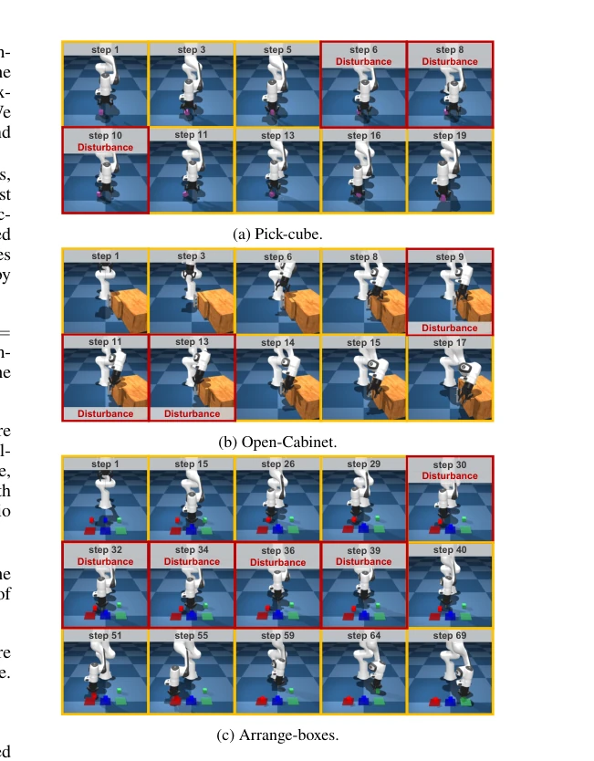
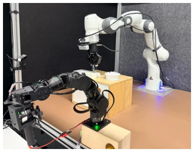
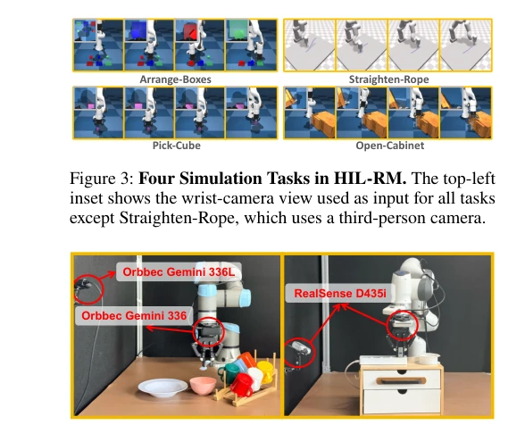
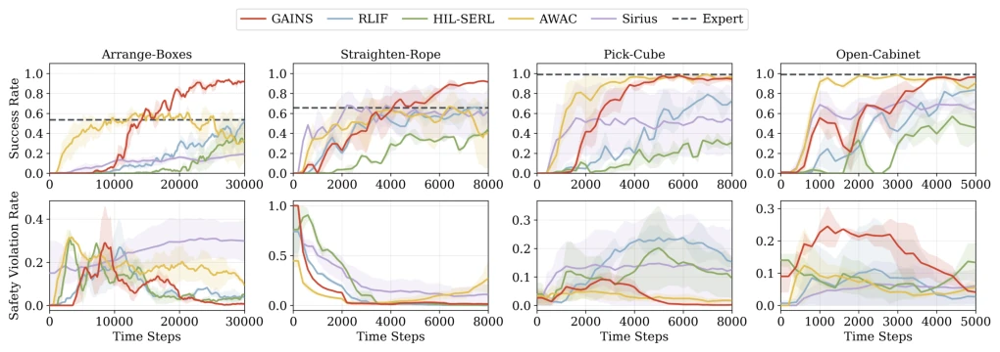
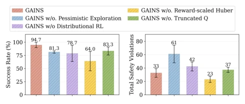
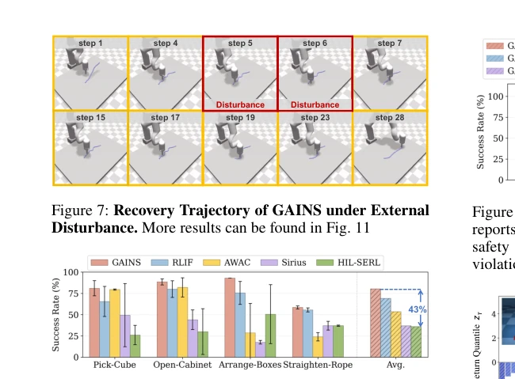

This paper captures a neglected pain point in Human-in-the-Loop Reinforcement Learning (HIL-RL): human intervention signals not only may have imperfect actions, but even 'when to intervene' is full of uncertainty. GAINS uses Distributional RL to model this return fluctuation, the idea is quite clear, after all scalar Q-values indeed cannot accommodate such multimodal distributions. However, for fair comparison, the authors used pre-trained RL experts to generate intervention actions in the simulation environment HIL-RM, with humans only responsible for pressing buttons, does this count as a variant of 'artificial stupidity'? Although real-world experiments proved robustness, will the 'pessimistic exploration' strategy cause the robot to be too conservative in complex tasks, afraid to try new actions? Additionally, although the reward-scaled Huber loss is practical, it feels more like engineering tuning than a theoretical breakthrough. Overall, it is a solid engineering improvement, but the theoretical depth is slightly insufficient, suitable for deployment, not suitable for top conference theory track.
Existing HIL-RL methods mostly assume human feedback is reliable or optimal. For example, RLIF (Luo et al. 2024) treats intervention as precise binary labels, modeled with scalar Q-functions, ignoring signal uncertainty. HIL-SERL (Luo et al. 2025), although high performance, relies on high-quality human demonstrations or assumes feedback consistency. The authors found through experiments that when humans watch failure videos, intervention timing varies greatly (over 50% of intervention time differences exceed 10 frames), and there are also significant differences between different operators. This inconsistency leads to return distributions presenting multimodal or wide distributions, which scalar estimation cannot capture. Therefore, a method capable of explicitly modeling return variability is needed to achieve safe and efficient learning under sparse rewards and imperfect interventions.

Figure 1: Human Intervention Timing Is Inconsistent. We replay failure videos multiple times to measure intervention- timing consistency; the top-right panel highlights interven- tion frames from different rounds in yellow.
The GAINS framework is based on an asynchronous Actor-Critic architecture. The core is Distributional RL, adopting TQC (Kuznetsov et al. 2020) as the backbone, using multiple Critic networks to output quantile atoms to estimate return distributions rather than scalar values. For sparse rewards, the authors proposed a reward-scaled quantile Huber loss, setting the Huber threshold to success reward R, to balance gradient propagation and outlier suppression. In the policy optimization phase, a pessimistic exploration strategy is introduced: after sampling candidate actions, only calculate the average of the lower tail quantiles below threshold τth as the pessimistic Q estimate, selecting the action with the highest value. This forces the policy to avoid states that easily trigger human intervention or safety violations. Additionally, discrete gripper control uses Double DQN, continuous control uses a SAC variant, together constituting a complete online learning process. To suppress Q-value overestimation, the largest d atoms are truncated when training the target distribution. This design enables the model to learn policies more robustly when facing human intervention uncertainty, avoiding dangerous behaviors caused by excessive optimism.
The authors evaluated on the HIL-RM simulation suite (4 tasks) and two real-world tasks (Pick-Spoon, Insert-USB). Comparison baselines include RLIF (Luo et al. 2024), HIL-SERL (Luo et al. 2025), AWAC, etc. Main metrics are success rate, safety violation rate, and episode length. Results show that GAINS improved success rate by 44% on the complex task Arrange-Boxes, real tasks improved up to 52.5%. Recovery success rate under external disturbances averaged 80.3%, better than HIL-SERL 43%. Ablation experiments show that removing pessimistic exploration leads to increased safety violations, removing distribution estimation lowers success rate. Visualization shows that lower tail quantiles increase in later training, proving the model learned to avoid high-risk states.

Figure 6: Comparison Results in Real-World Tasks. Re- sults are averaged over 3 seeds.

Figure 7: Recovery Trajectory of GAINS under External Disturbance. More results can be found in Fig. 11

Figure 11: Robust Environment of HIL-RM.

Figure 12: Homogeneous bilateral manipulator setup in Franka Emika.
其他图片Other Figures

Figure 4: Real-world Experimental Setups. Left: UR5 with 2 cameras for the Pick-Spoon task. Right: Franka Emika with 2 cameras for the Insert-USB task.

Figure 5: Comparison Results in HIL-RM. Results are averaged over 3 seeds, with shaded regions indicating the standard deviation. Curves are smoothed with sliding window.

Figure 9: Ablation Studies on Arrange-Boxes. Each bar reports the mean performance over 3 random seeds. Total safety violations denote the cumulative number of safety violations throughout training.

Figure 8: Robustness Results in HIL-RM. For each method, we evaluate the final checkpoints under 100 trials.